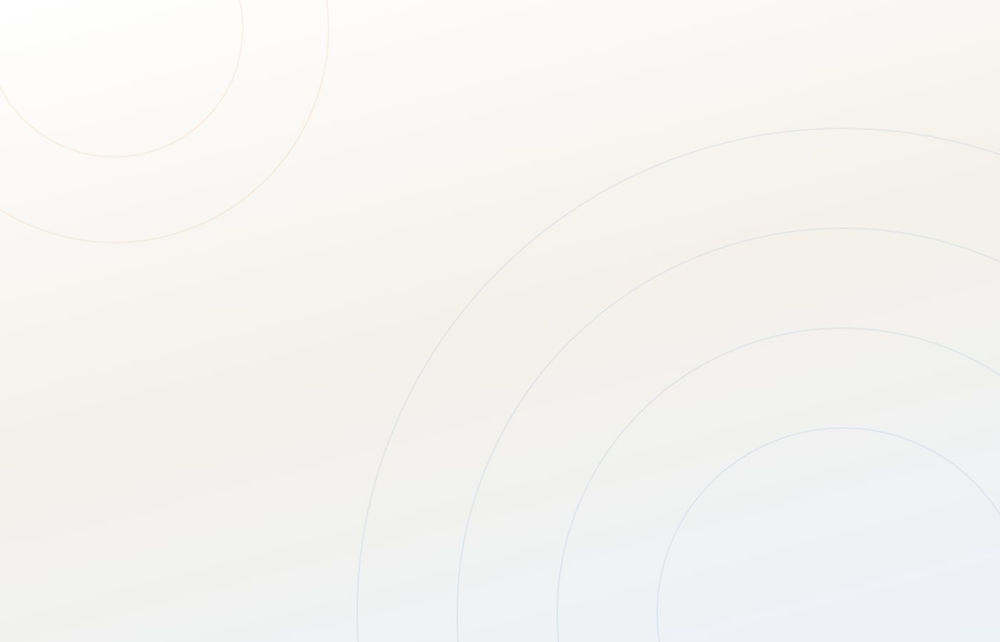

@clintia.br
Marketing e vendas
para clínica popular.
A 1ª assessoria de clínica popular do Brasil.
Aprenda o método com a comunidade,
ou deixe a nossa equipe implementar na sua clínica.
Comunidade + Manual
A primeira comunidade do Brasil feita só pra dono de clínica popular
Materiais que resolvem os gargalos de quase toda clínica popular, gente que passa pelo mesmo que você e um plano de ação pra executar em 30 dias. De dono passivo a dono ativo, com um caminho.
- Portal + comunidade de donosIncluso
- O Manual da Clínica Popular — 9 capítulos em 4 fasesIncluso
- Plano de ação de 30 diasIncluso
- Planilha da conta de padaria + custo por paciente por canalIncluso
- 9 scripts de resgate no WhatsAppIncluso
- Checklist do Google 4.8 + Painel do DonoIncluso
- Atualizações conforme a gente aprendeIncluso
12× de R$ 15,20
ou R$ 147 à vista · 7 dias de garantia
Entrar

por ClintIA
Implementação
Infraestrutura de marketing e vendas, implementada na sua clínica
Um projeto personalizado: a gente entra na sua clínica, entende em que estágio ela está, desenha o projeto e uma equipe treinada só em clínica popular executa de ponta a ponta. Não é consultoria. A gente executa.
- Posicionamento e demanda: ser a primeira escolha do bairro
- WhatsApp que conduz: resposta em minutos, base reativada
- Time de vendas: treinamento, script e cultura de venda
- Números toda semana: custo por paciente e retorno por canal
Tudo começa com o Diagnóstico 1 a 1: uma conversa com o time comercial sobre a sua clínica, os seus números e o seu gargalo.
Agendar diagnóstico